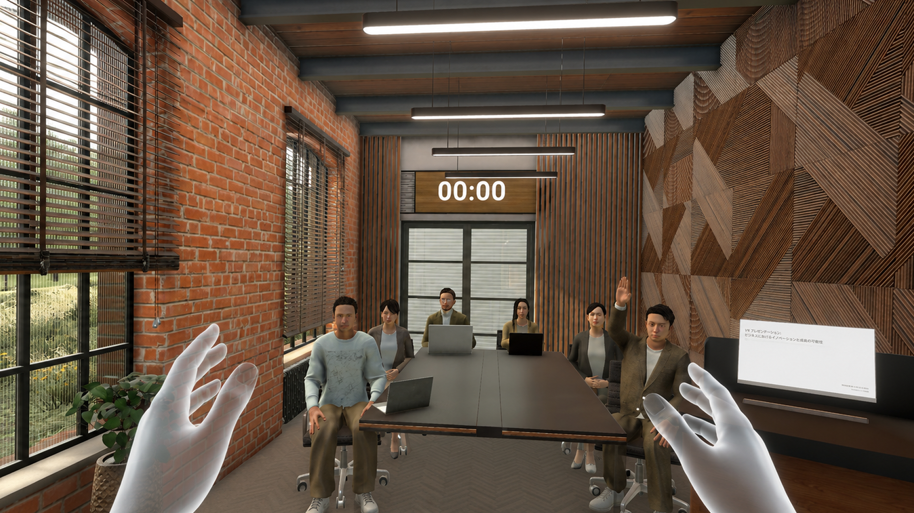

단계별 발표 연습
짧은 문장부터 발표 전체까지 부담을 나누어 연습해요.
SPEECH PRACTICE SERVICE
발표 주제를 고르고, 단계별 연습과 피드백으로 자신 있게 말하는 흐름을 만들어 보세요.
연습 구성 살펴보기
FEATURES
짧은 문장부터 발표 전체까지 부담을 나누어 연습해요.
실제 상황을 떠올리며 발표 속도와 시선을 점검해요.
연습 결과를 확인하고 다음 연습 목표를 정해요.
DYNAMIC PRACTICE
탭, 검색, 난이도 선택에 따라 화면이 즉시 바뀝니다.
인사와 핵심 문장을 짧게 말하며 발표의 첫 문을 열어요.
도입·전개·마무리를 연결해 발표 내용을 자연스럽게 구성해요.
지난 연습의 속도와 전달력을 돌아보고 다음 목표를 정해요.
연습 3개를 찾았어요.
입문 · 5분
기초 · 10분
기초 · 8분
STAY TUNED